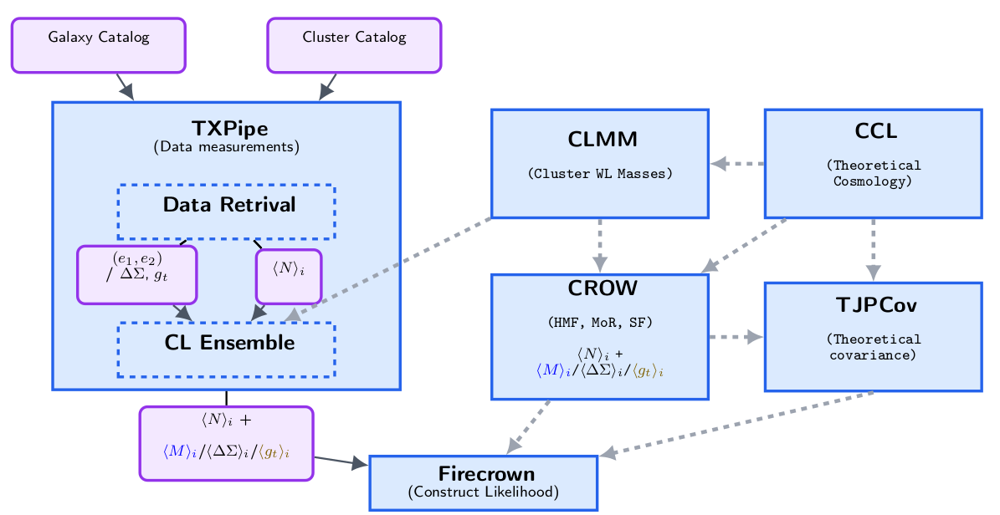
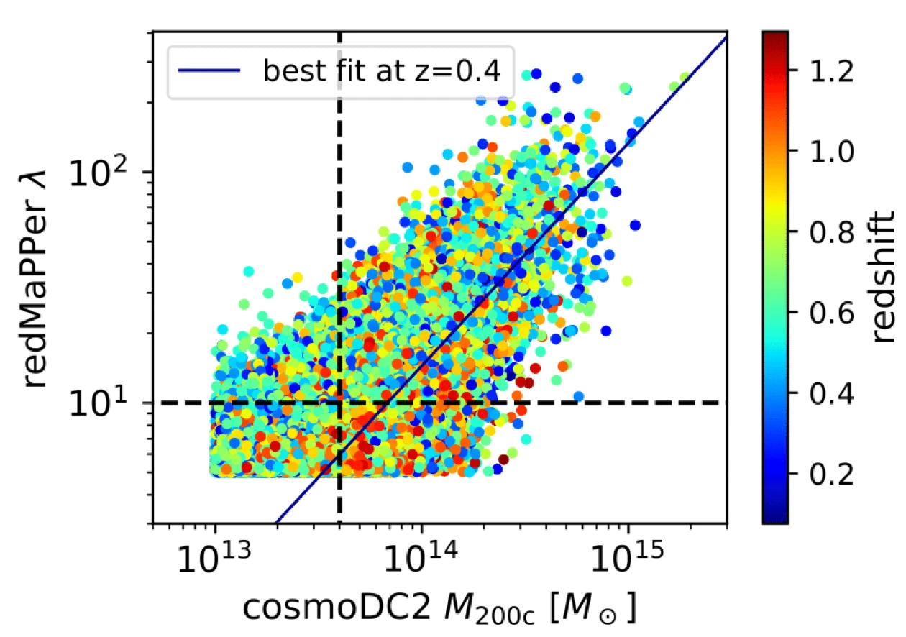

Research
Cosmologist · LAPP, Annecy, France
My research sits between observational and theoretical cosmology, currently centered on galaxy clusters as cosmological probes within the LSST Dark Energy Science Collaboration (DESC), alongside ongoing work on primordial black hole formation in bouncing cosmologies and numerical methods for cosmological inference.
Galaxy clusters with LSST-DESC
I coordinate the galaxy cluster cosmology pipeline for LSST-DESC, which
turns LSST galaxy-cluster data into cosmological constraints — from
data-vector construction all the way to the final likelihood inference.
I've contributed to every stage: building cluster data-vector estimators
in TXPipe, co-developing Crow for weak-lensing
profile predictions, extending the TJPCov covariance
framework, and constructing likelihoods with Firecrown, all
now tied together in CLPipe, an automated end-to-end
analysis framework. I've also contributed to validating the
WaZP cluster finder on DC2 simulations and to the second
public release of CLMM.


Cluster richness — the number of galaxies detected in a cluster — is an easy quantity to observe, but it only becomes useful for cosmology once it's calibrated against true cluster mass. This plot shows redMaPPer richness against the true halo mass in the DESC cosmoDC2 simulations, color-coded by redshift, together with the best-fit mass–richness relation at z=0.4. I contributed to this analysis (Payerne et al. 2025), which directly informed the design of the DESC cluster pipeline.
Beyond the technical development, I coordinate this effort within DESC — running weekly meetings and prioritizing the team's work — and I organized a hands-on cluster-pipeline workshop at LAPP Annecy with 15 participants from inside and outside France. I've been an active DESC member since my PhD and a full member since 2023, working across the Cluster, Forecast, Weak Lensing, 3×2pt, and Blinding working groups.
Primordial black holes in bouncing cosmologies
I also study whether primordial black holes (PBHs) can form in bouncing cosmologies — alternative early-Universe models where a contracting phase precedes the Big Bang, avoiding the initial singularity. Because perturbations evolve continuously through the bounce rather than freezing outside the horizon as in inflation, the usual collapse threshold used to predict PBH formation doesn't directly apply. We developed a framework using exact inhomogeneous solutions to track this evolving threshold, first in a dust-dominated bounce (Barroso et al. 2025), and now in a more realistic dust-plus-radiation bounce (Ye, Demetrio, Barroso et al. 2026). Both studies find that PBHs formed during the contraction phase never reach cosmologically relevant abundances — a useful constraint on non-inflationary early-Universe scenarios.
Numerical methods for cosmology
I contribute to the Numerical Cosmology Library (NumCosmo),
developing computational tools that other cosmological analyses rely
on: APES, an ensemble MCMC sampler that uses kernel
density estimation to build efficient proposal distributions (Vitenti
& Barroso 2023), and AutoKnots, a spline
interpolation method that automatically places knots to cut
computational cost without losing precision (Vitenti, de Simoni,
Penna-Lima & Barroso 2025).
- Galaxy clusters
- Weak lensing
- LSST / Rubin Observatory
- LSST-DESC
- Primordial black holes
- Bouncing cosmology
- Numerical cosmology
- MCMC methods